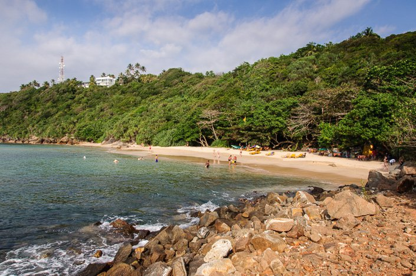

Enthralled travellers and rustic coloured buildings and shops with bold and bright handlooms, gems and Sri Lankan specialties adorned the sides of the street as we walked down the roads on a sunny Friday morning. Found in the 16th century by the Portuguese, the historical city of the Galle Fort, is a box of surprises waiting to be unravelled. My first visit to the Galle Fort was a few years back with my family, its historical architecture and raw beauty completely blew me away. The Galle Fort is a wonder I tell you, the UNESCO has not only inscribed it as one of “cultural heritage”, it also describes it as ‘C’est le meilleur exemple d’une ville fortifiée construite par les Européens en Asie du Sud’ which translates to ‘it is the best example of a fortified city built by Europeans in South and South-East Asia’. This description suits the city perfectly; history and art that brings the best out of colonisation and imperial power.
Even after 423 years, the Galle Fort stands on top of list of the must see places in Sri Lanka. The factor that makes this city stand out from the rest of them is its rich history and architecture. Walking down the streets brought be absolute joy. Not only did it thoroughly please me as an enthusiastic traveller, it also gave me much more closure to the gifted island I was born and brought up in. From the entrance to the fort that screams out history, to the police barracks and the huge magistrate’s court to nearly all of the restaurants to hotels to shops, the Galle Fort has a very architecturally rustic and raw vibe to it. Not only does it tingle your feet when you see the ancient inscriptions on random walls but when you talk to those on the street and ask them about the city, they would tell you how they’ve been told that the place was once a busy port, long long ago, the time it was known as ‘the port of call of the Levant”. This is the harbour where the Portuguese, under the leadership of Lourenço de Almeida, made their first landing in 1505. This city has not only seen the loss of our country to the Europeans, it has also seen bloodshed and wars fought to claim it back.
While walking down Pedlar Street, we met a lady making her days earnings by selling beautifully and intricately made handmade cards on the side of the road. When we spoke to her she told us how she was once a rich townswoman from Colombo about 20 years ago. After losing her brother at the age 19, and eloping with her lover she now regrets her past as she told us that after her husband fell sick two years ago, she was left on her own to fend for her family. She isn’t the only one making a day’s living selling handmade cards down the side of the road, you are bound to meet women selling lots of things varying from Sri Lankan delicacies to handmade crafts

The impressive cameo note, in the Daily News Travel by Ganga Pradeepa, nudged me into musing about Rumassala and its environs. There is a strong reason for such reflection. I hail from Unawatuna, and was born and bred on the leeward side of the sheltering Rumassala. First, let me make a brief observation about the popular etymology of the name of this village – Unawatuna. Most people tend to settle for the ready interpretation, that, Unawatuna derives from ‘Onna-wetuna’ (There, it fell). But, in reality, the name ‘Unawatuna’ denotes a minor harbour – ‘a cove or a small bay’. It becomes from Una-patuna (Oonapattana) – small inlet. This expression has been used to denote natural harbours, in ancient Sri Lanka (Dambakola Patuna, Yapa Patuna etc.). For centuries, ocean going vessels, called at Galle and Unawatuna. A helpful ocean current allowed ships to drift almost effortlessly to these natural harbours of the southern coast. Though the Portuguese Captain Laurenco de Almeida, intended to sail to the Port of Colombo, the current brought him to Galle. Age-old lore has it, that, Tarshish – a Port referred to in the Bible, is in fact Galle. Around the cove of Unawatuna, there are traces, that speak about links with lands beyond the ocean. Even today, there is a place on the shore at Unawatuna bay, known as ‘Ja-kotuwa’ – ‘The camp of the Javanese people’. The very name of the capital city of the Southern Province – Galle – has been whimsically interpreted in popular etymology. They try to make out that, Galla is derived from Gala which means cattle-shed. But, Galla simply means forest or grove as in such instances as Attana-galla, Tan-galla. At times Galla changes into Golla.